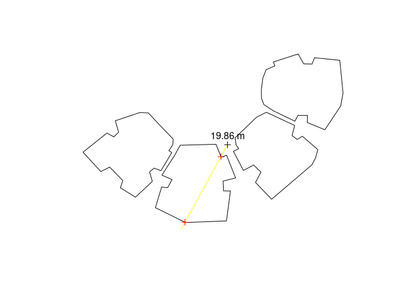
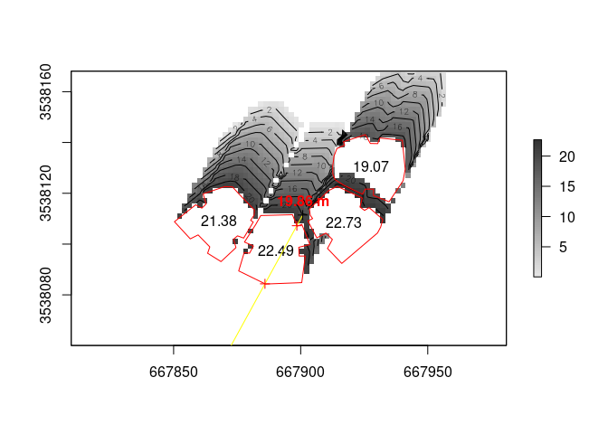

Introduction
shadow is an R package for geometric shadow calculations in an urban environment. A detailed description can be found in the R Journal paper (2019):
Installation
CRAN version:
install.packages("shadow")
GitHub version:
install.packages("remotes") remotes::install_github("michaeldorman/shadow")
Quick demo
library(shadow) #> Loading required package: sp library(raster) # Point location = rgeos::gCentroid(build) #> Warning in fun(libname, pkgname): rgeos: versions of GEOS runtime 3.8.0-CAPI-1.13.1 #> and GEOS at installation 3.7.1-CAPI-1.11.1differ # Time time = as.POSIXct( "2004-12-24 13:30:00", tz = "Asia/Jerusalem" ) # Location in geographical coordinates location_geo = sp::spTransform( location, "+proj=longlat +datum=WGS84" ) # Solar position solar_pos = maptools::solarpos( crds = location_geo, dateTime = time ) solar_pos #> [,1] [,2] #> [1,] 208.7333 28.79944 # Shadow height at a single point h = shadowHeight( location = location, obstacles = build, obstacles_height_field = "BLDG_HT", solar_pos = solar_pos ) # Result h #> [,1] #> [1,] 19.86451 # Visualization sun = shadow:::.sunLocation( location = location, sun_az = solar_pos[1, 1], sun_elev = solar_pos[1, 2] ) sun_ray = ray(from = location, to = sun) build_outline = as(build, "SpatialLinesDataFrame") inter = rgeos::gIntersection(build_outline, sun_ray) plot(build) plot(sun_ray, add = TRUE, col = "yellow") plot(location, add = TRUE) text(location, paste(round(h, 2), "m"), pos = 3) plot(inter, add = TRUE, col = "red")

# Raster template ext = as(raster::extent(build)+50, "SpatialPolygons") r = raster::raster(ext, res = 2) proj4string(r) = proj4string(build) # Shadow height surface height_surface = shadowHeight( location = r, obstacles = build, obstacles_height_field = "BLDG_HT", solar_pos = solar_pos, parallel = 2 ) # Visualization plot(height_surface, col = grey(seq(0.9, 0.2, -0.01))) contour(height_surface, add = TRUE) plot(build, add = TRUE, border = "red") text(rgeos::gCentroid(build, byid = TRUE), build$BLDG_HT) text(location, paste(round(h, 2), "m"), pos = 3, col = "red", font = 2) plot(sun_ray, add = TRUE, col = "yellow") plot(inter, add = TRUE, col = "red") plot(location, add = TRUE)
